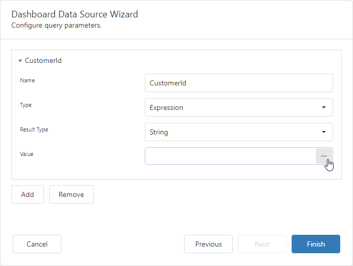
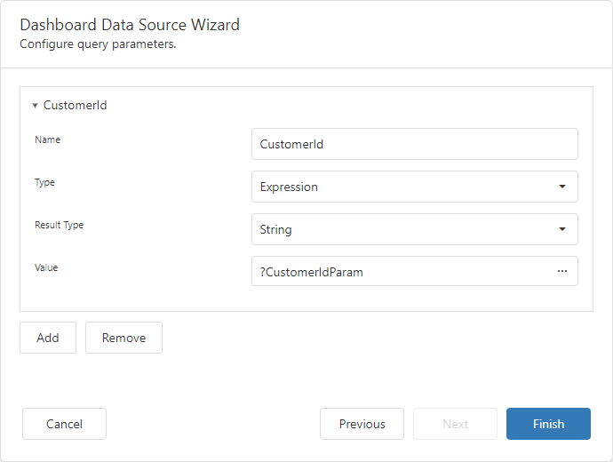
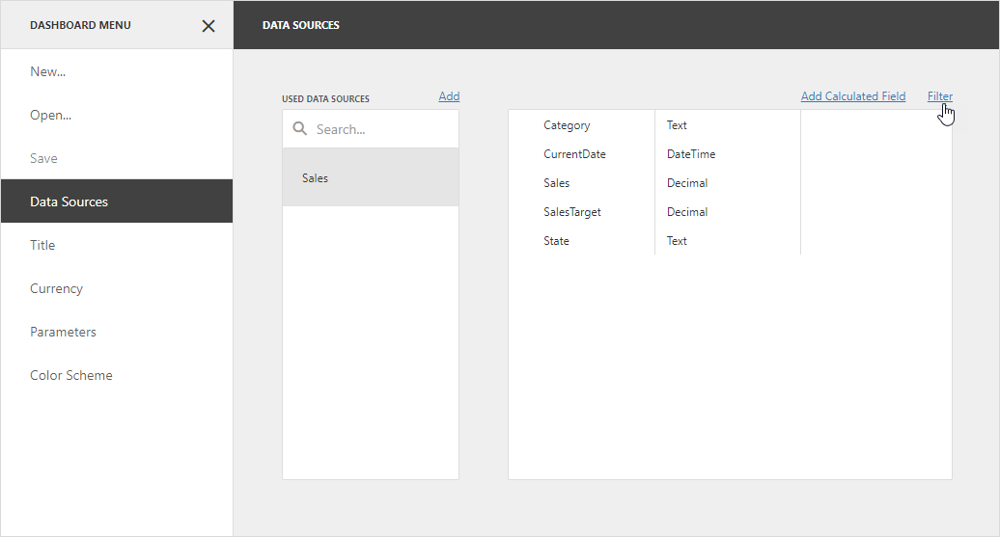
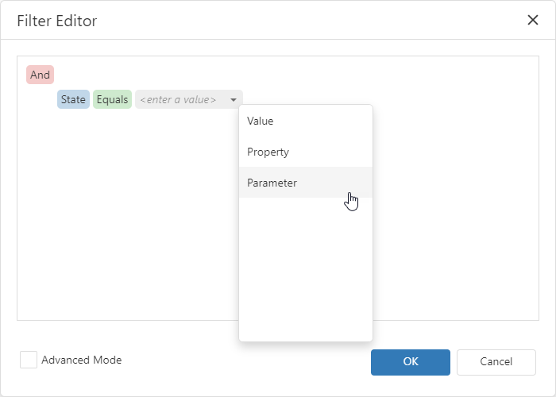
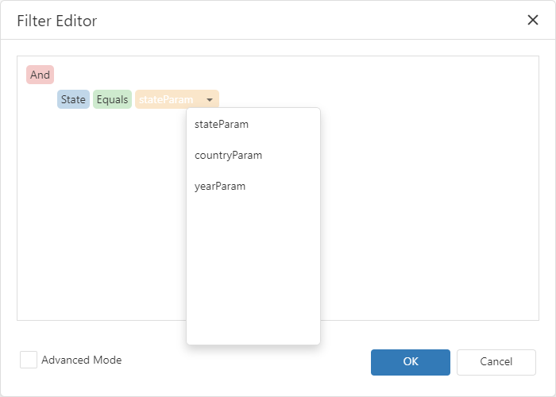
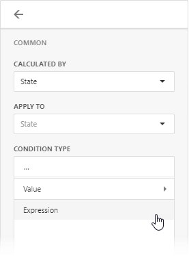
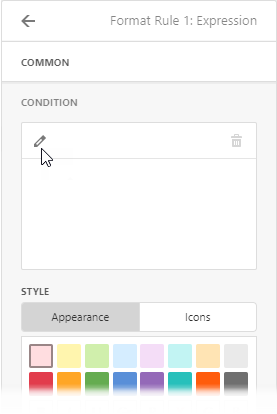
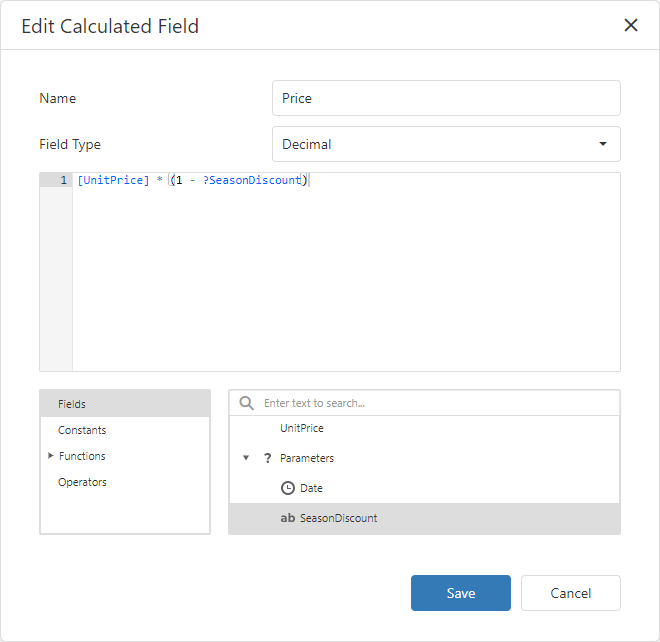
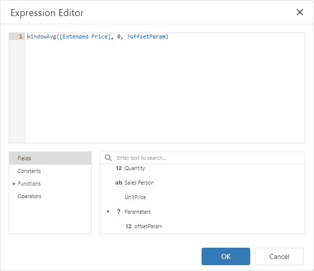

Reference Dashboard Parameters
This topic describes how to reference a dashboard parameter in filter strings, calculated fields, and window calculations. You can also bind a dashboard parameter to a query parameter to filter the SQL data source dynamically.
Tip
You can also create cascading parameters in the Web Dashboard. For more information, refer to the following topic: Cascading Parameters.
SQL Queries and Stored Procedures
You can filter the SQL data sources dynamically if you bind a query parameter to a dashboard parameter.
Invoke the Data Source Wizard window or use the Properties section of the Query Builder to access the query parameter settings. Change the query parameter type to Expression and specify the expression with a dashboard parameter in the Value field:

The resulting query parameter settings may appear as follows:

Refer to the following article for more information about query parameters: Use Query Parameters.
Tip
For information on how to filter Excel, Object, XPO, and JSON data sources, refer to the following article: Filter Data Sources.
Data Source Filtering
The Web Dashboard allows you to filter Excel, Object, XPO, and JSON data sources dynamically if you use a dashboard parameter in the filter criteria.
To add filters to a data source, open the dashboard menu, invoke the Data Sources page, select a data source and click Filter.

In the invoked Filter Editor, build a filter expression. Click the down arrow glyph in the operand value placeholder to expand the list of available objects. Select the Parameter option to compare a field value with a parameter value.

To select a dashboard parameter from the list of available parameters, click the parameter operand:

Click OK to save the created filter criteria. Now, when you change the dashboard parameter value, the data source is filtered according to the parameter value.
Dashboard Item Filters
Web Dashboard allows you to use the following data filters in dashboard items:
Dashboard Item Filter : Filters individual dashboard items independently.
Measure Filter : Filters only the specified measure in the dashboard item.
Visible Data Filter : Hides a part of the calculated data from the view. This filter type does not filter underlying data used in calculations or intermediate level aggregations.
To apply filtering based on a dynamic value, you need to use a dashboard parameter in a filter criteria. The following example describes how to filter a dashboard item according to a dashboard parameter value.
To add a dashboard item filter, open the dashboard item’s Filters menu, go to the Item Filter section and click the Edit button:

In the invoked Filter Editor, build a filter expression. Click the down arrow glyph in the operand value placeholder to expand the list of available objects. Select the Parameter option to compare a field value with a parameter value.
To select a dashboard parameter from the list of available parameters, click the parameter operand:
Click OK to save the created filter criteria. Now, when you change the dashboard parameter value, the dashboard item is filtered according to the parameter value.
Tip
For more information on filtering in Web Dashboard, refer to the following article: Filtering.
Conditional Formatting
You can apply conditional formatting to a dashboard item according to the current parameter value. It allows you to format dashboard item elements dynamically.
To reference a dashboard parameter in a format rule, set the condition type to Expression:

In the invoked dialog, click the Edit button to create a condition:

In the invoked Filter Editor, build a filter expression. Click the down arrow glyph in the operand value placeholder to expand the list of available objects. Select the Parameter option to compare a field value with a parameter value.
To select a dashboard parameter from the list of available parameters, click the parameter operand:
Click OK to save the created format rule. Now, when you change the dashboard parameter value, the dashboard item is formatted according to the parameter value.
Tip
For more information on conditional formatting in Web Dashboard, refer to the following article: Conditional Formatting.
Calculated Fields
You can use parameters when you construct expressions for calculated fields. This allows you to evaluate values of the calculated field dynamically depending on the current parameter value.
To reference the dashboard parameter value in an expression, add or edit a calculated field. In the invoked Edit Calculated Field window, double-click the required parameter in the Fields section.

Click Save to save the created calculated fields. Now, when you change the dashboard parameter value, the calculated field values are changed according to the specified expression.
Tip
For more information on calculated fields in Web Dashboard, refer to the following article: Calculated Fields.
Window Calculations
You can use dashboard parameters in window calculations. This allows you to apply specific computations to measure values depending on the current parameter value.
To reference the dashboard parameter value in an expression, create or edit a window calculation. In the invoked Expression Editor window, double-click the required parameter from the Fields section.

Click OK to save the created window calculation. Now, when you change the dashboard parameter value, the calculation values are changed according to the specified expression.
Tip
For more information on window calculations in Web Dashboard, refer to the following article: Window Calculations.